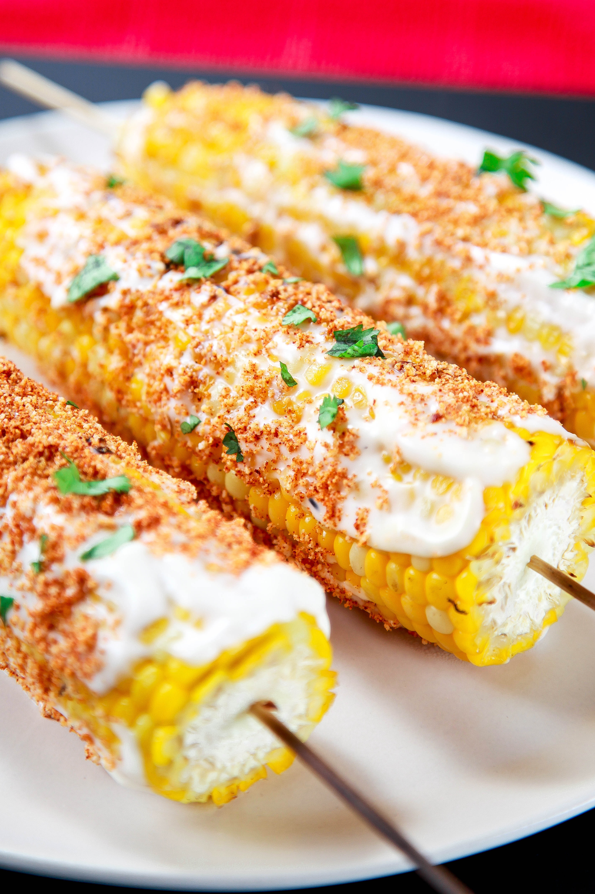

Fiesta Street Corn

Juicy Corn Packed with Flavor!
Golden pieces of juicy corn topped with delicious
cotija cheese and creamy mayonnaise!
Ingredients
- 6 ears fresh sweet corn
- 6 tbs. mayonnaise
- 1/2 tsp. garlic powser
- 1 cup cotija cheese - crumbled
- 1/3 cup fresh cilantro - roughly chopped
- 1 tsp. chipotle chili powder
- 2 limes - quartered
Steps
- Preheat oven to 350°F. Place corn in husks directly on the oven rack.
Bake for 35-40 minutees or until fork tender.
- While corn is cooking, in a small bowl, combine garlic powder and mayonnaise.
- When corn is done brush with garlic mayo. Roll in cotija cheese.
- Sprinkle with cilantro and chili powder.
- Squeeze with fresh lime juice if desired.